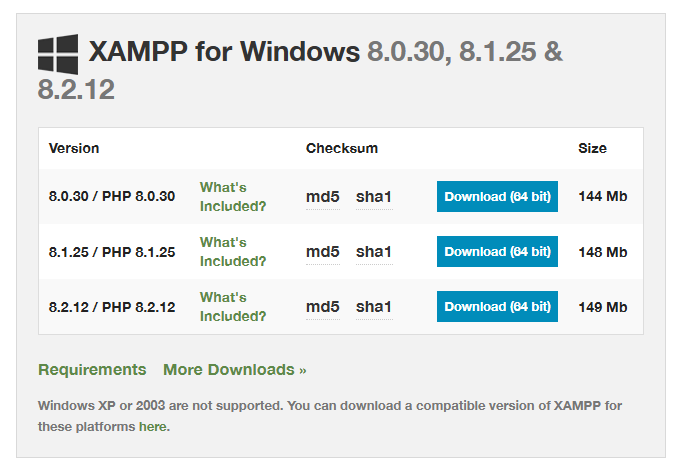
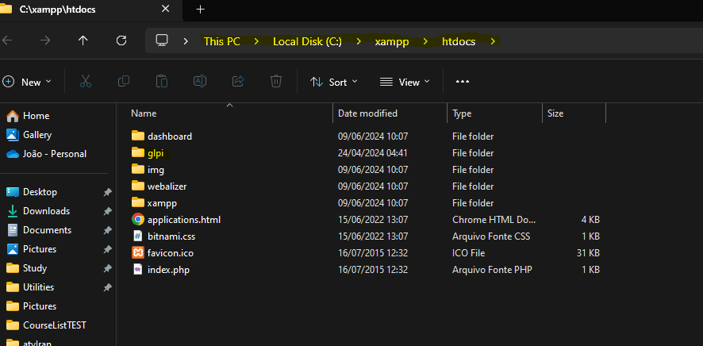
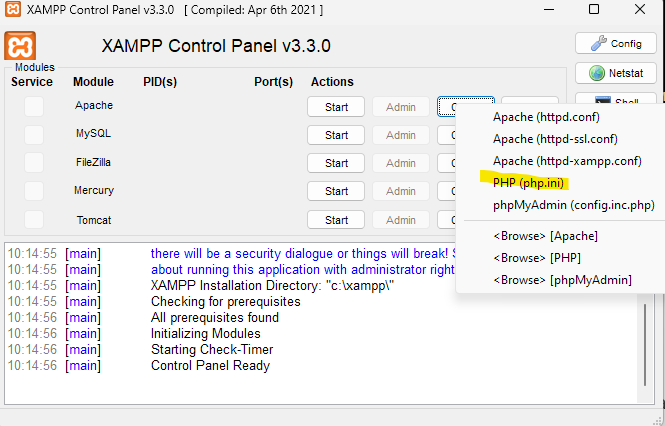
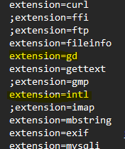
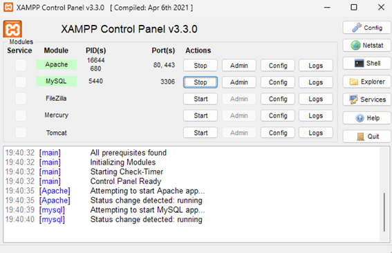
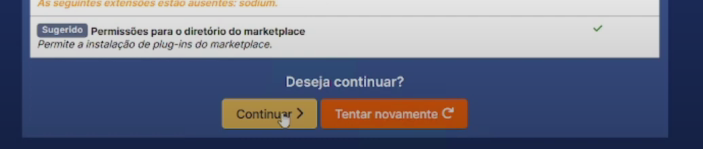
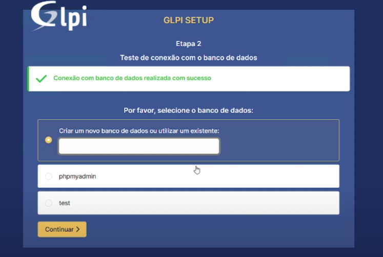
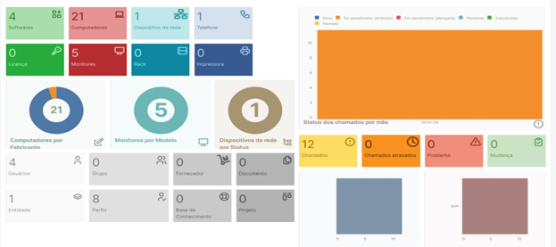

GLPI - Configuração e uso
Instalação do GLPI
Essa página ensinará como instalar o GLPI e configurar ele para seu funcionamento utilizando do XAMPP para fazer seu deploy.
Etapa 1 - Instalando o XAMPP
O XAMPP é um software gratuito que inclui duas partes essenciais para o uso do GLPI: Apache e MySQL. É por esse motivo que o XAMPP facilita muito a configuração do GLPI, pois inclui ambos em um só painel de controle.
A primeira coisa que precisa fazer é baixar a última versão no site e instalá-lo normalmente em seu computador. Após instalar, abra o programa 'XAMPP Control Panel'. Nessa tela, terá diversos módulos, mas usaremos apenas o Apache e MySQL.

Etapa 2 - Instalando o GLPI
Agora precisamos colocar os arquivos do GLPI para serem utilizados pelo XAMPP. Entre no site do GLPI e faça o download da versão STABLE. Você terá um arquivo .tgz no seu computador - extraia ele e obtenha a pasta "glpi".
Agora copie essa pasta "glpi" que você extraiu do arquivo compactado para a pasta htdocs dentro do seu local de instalação do XAMPP. No meu caso, meu XAMPP está localizado dem *C:\xampp*, e a pasta htdocs está inclusa dentro da mesma. A organização das pastas deverá ficar assim:

Etapa 3 - Configurando o GLPI
Agora que você já tem os arquivos do GLPI propriamente instalados para o XAMPP utilizar, abra novamente o painel de controle do mesmo. Antes de iniciarmos os módulos para configurar o GLPI, precisamos primeiro configurar duas extensões que são cruciais. Dentro do painel de controle do XAMPP, clique em "Config" do Apache e abra o arquivo php.ini.

Nesse arquivo, você procurará pelas extensões intl e gd. Procure elas utilizando CTRL+F e retire o ";" de frente delas, sinalizando para o programa que você quer ativar essas extensões. Depois disso, é só salvar. Deve ficar assim:

Depois disso, é só dar Start no Apache e MySQL e entrar em localhost/glpi e pronto! Você estará na tela de config do GLPI.

Depois disso, prossiga com a instalação. Na tela que mostra os complementos e extensões, apenas clique em Continuar.

Para facilitar a explicação, coloquei como Server SQL o localhost e Usuário SQL como root, sem senha. Essas podem ser definidas na preferência do usuário, se desejado.
Nessa etapa final, apenas nomeie como desejado o seu banco de dados e deixe que o GLPI finalize o resto. Após isso, é só concluir a configuração e você já estará sendo redirecionado para a tela de login.
O usuário e senha padrão é glpi em ambos! Pode ser trocada depois se desejado.

E pronto! Você já se encontra dentro da sua dashboard do GLPI aonde poderá inserir seus computadores, telas e outros ativos.

Na próxima etapa, ensinarei como funciona a adição de diferentes ativos e como eles funcionam para organizar e administrar dentro do GLPI.